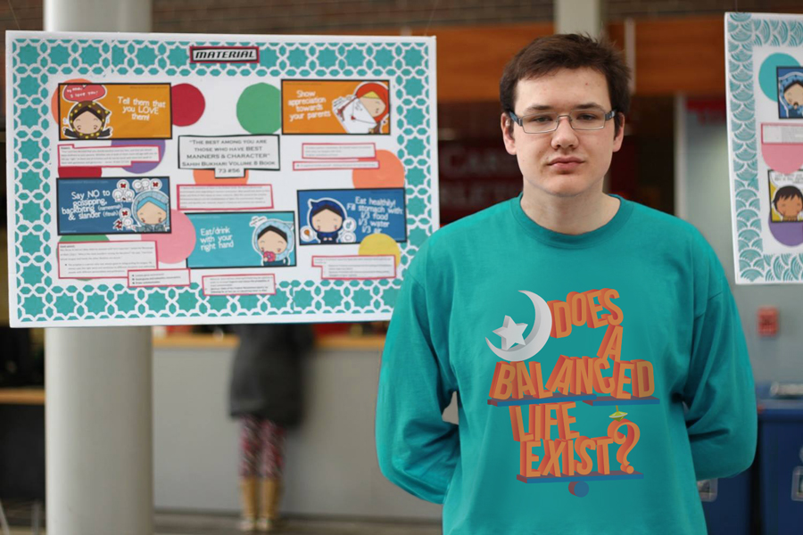
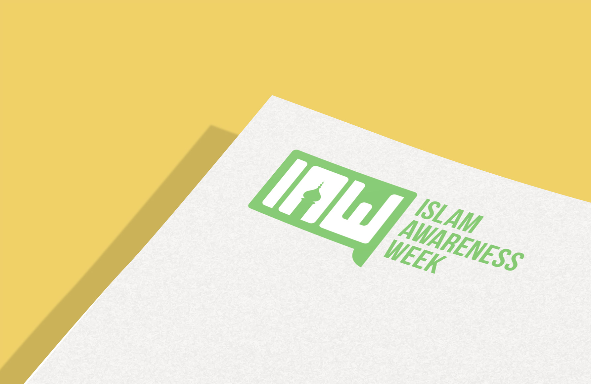
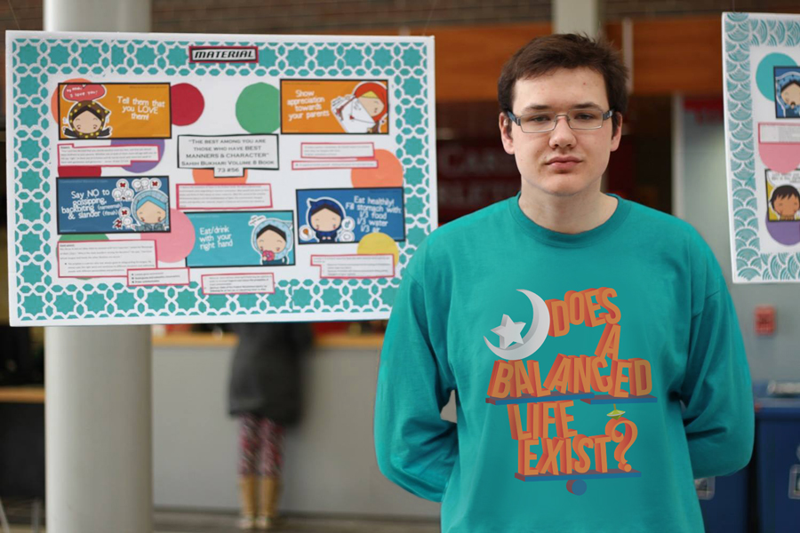
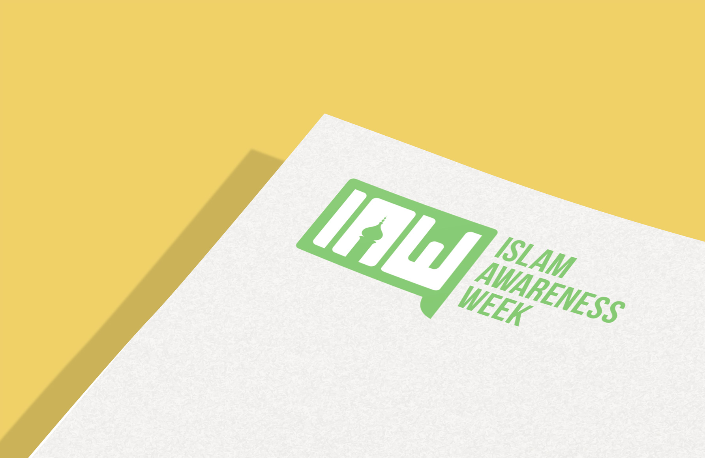

IAW is an annual weeklong event held by the Muslim Student’s Association. In 2014, I was asked to come up with a design concept and a marketing plan to promote that year’s theme: balancing between spirituality and materialism. I also led a team of 5 people over 4 months as we implemented the marketing strategy before, during and after the event. The main goal of this project was to present the event in a creative and interactive light.